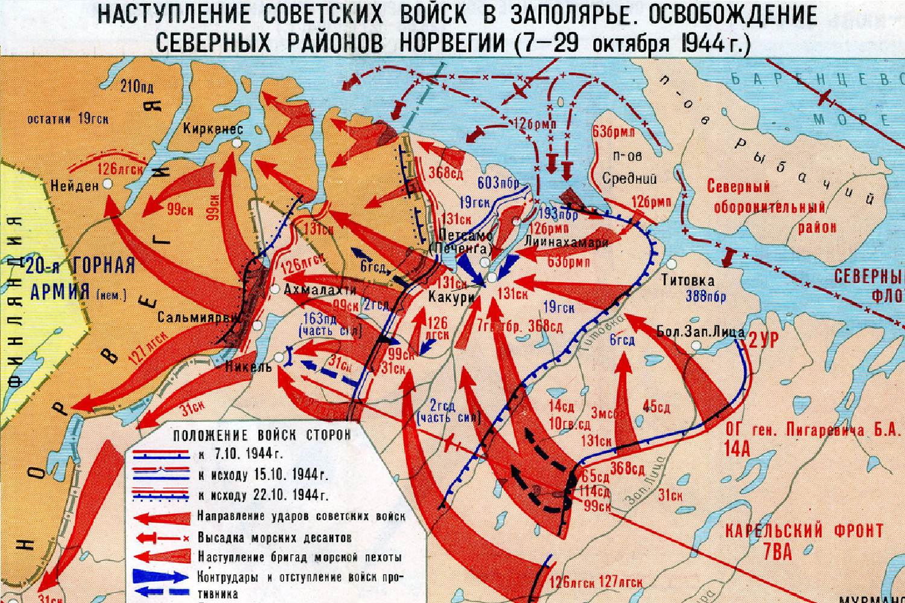
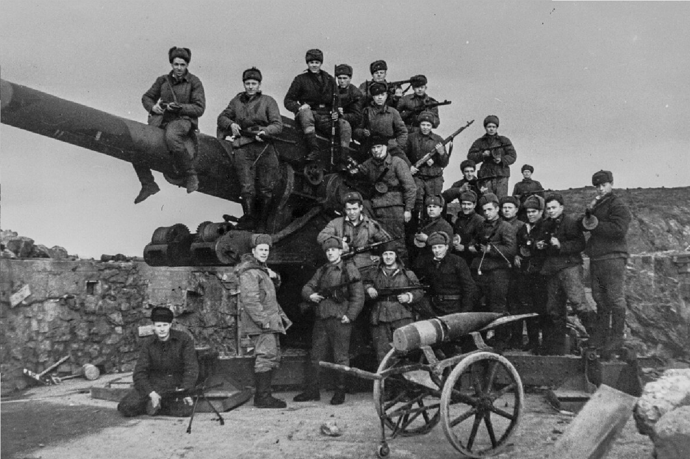
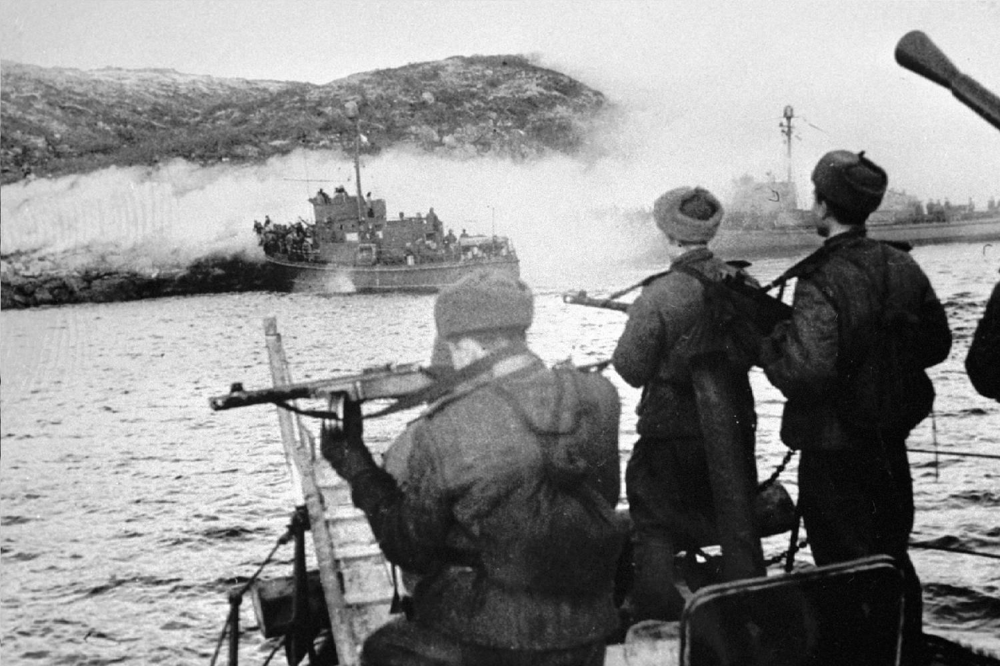

1944
|  |
|
|
Подготовка к операции включала в себя значительное сосредоточение войск, а также артиллерийские и авиационные удары по позициям противника. Операция началась с массированных атак советских войск на позиции немецких сил. Советы использовали хорошо подготовленные соединения, которые смогли прорваться через укрепленные линии противника. В ходе операции Красная Армия провела несколько ключевых наступлений, включая боевые действия за Петсамо и Киркенес. Бои были жестокими, но советские войска смогли быстро продвигаться вперед. 29 октября 1944 года было объявлено о завершении операции, и советские войска заняли как Петсамо, так и Киркенес. Это привело к значительным потерям среди немецких войск, которые в итоге были вынуждены отступить на запад. |
 |
|  |
Операция завершилась освобождением Заполярья и возвращением этих территорий под контроль Советского Союза. Успех Петсамо-Киркенесской операции открыл путь для дальнейших операций против немецких войск в Норвегии и Финляндии. Эта операция была важным шагом в контексте общей стратегии Красной Армии и способствовала ослаблению позиций Германии на северном фланге фронта. |